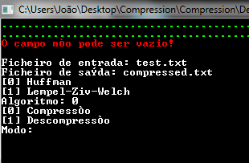
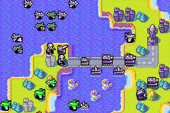
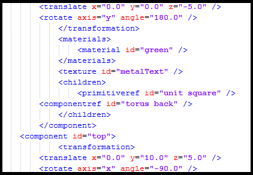
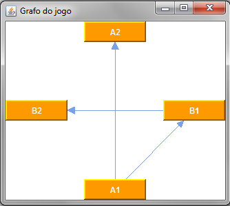
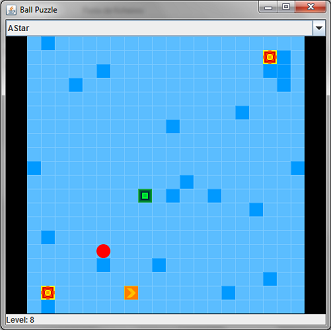
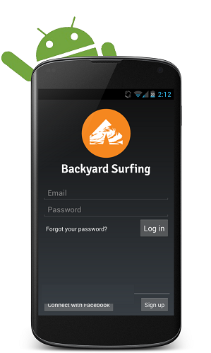
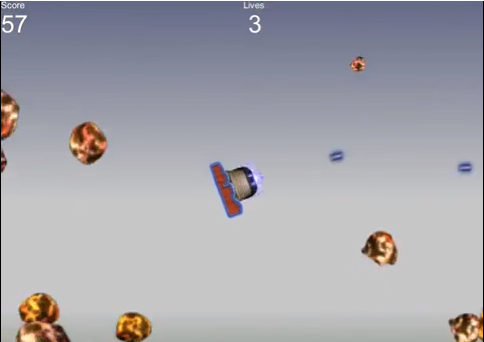

João Fernandes
A Software Engineering student looking for a thesis subject and a challenge
- C++ file compression program
- Java Wars Game
- XML Parser and Renderer
- Livresco
- DOT Language Compiler
- Ball Puzzle Pathfinder
- Backyard Surfing
- Firefighter multi-agent system
- I can't believe it's not Asteroids
- Rate My School
C++ file compression program
Year: 2
Semester: 2
Course: Algorithm Design and Analysis
This project consisted in a C++ program with a console interface that allowed compressing and decompressing files using Huffman compression or LZW compression. I handled the Huffman compression and found this to be a very interesting project, as I enjoyed learning more about file compression and manipulating the individual bits in the file proved to be quite a challenge. You can download the source code right here.
Java Wars
Year: 2
Semester: 2
Course: Object Oriented Programming Laboratory
This project consisted in a Java implementation of the Nintendo game Advance Wars, implementing most of the game's rules, with all its units and a few maps. It posed a bunch of interesting challenges, such as class modelling, choosing design patterns, dealing with pathfinding for the various units and learning how to use the Swing toolkit.
XML Parser and Renderer
Year: 3
Semester: 1
Course: Graphical Application Laboratory
This project consisted in a C++ program that read a XML file following a specific syntax and rendered the scene described in it using OpenGL. I handled the file parser and data structures to hold the scene information, with a little help from the TinyXML library for parsing. You can download the source code along with a sample file here, although you'll need to include the OpenGL libraries to use it.
Livresco
Year: 3
Semester: 2
Course: Distributed Systems
This project consisted in an Android app which made use of several RESTful APIs to allow users to keep track of the books they're reading and have read. The app made use of both existing services and a basic service of our own that allowed the user to create an account and manage some basic information. I personally worked on the connection with the user's google accounts, particularly their google books information, and with goodreads, where the user could search books and consult their metadata and reviews. It was a very interesting project and I am disappointed that I did not get another chance to work on Android during the rest of my studies.
DOT Language Compiler
Year: 3
Semester: 2
Course: Compilers
This project consisted in a parser that used JavaCC to read a file that used DOT language, validated it, showed the graph using JGraph and created a new file equivalent to the original, but, without errors. The most interesting challenge in this project was the handling and validation of attributes in the elements, which required a whole subparser to solve. You can download the source code here.
Ball Puzzle Pathfinder
Year: 3
Semester: 2
Course: Artificial Intelligence
This project consisted in a Java port of the ball puzzle flash game and the implementation of several pathfinding algorithms, such as A*, to solve the levels. This project proved itself to be pretty simple and it was chosen for showcase at Semana Profissão: Engenheiro, where some student projects are shown to high school students in order to enlighten them about the work done at FEUP. You can find the final version on >GitHub
Backyard Surfing
Year: 4
Semester: 1
Course: Software Development Laboratory
This project consisted in a platform akin to Couchsurfing, with the extension of camping in other people's backyards. It had both a Webapp written with Ruby on Rails and an Android app, and I took care of the methods and the API on the Webapp. It offered some experience with writing authentication and geolocation based services and it was my first experience with Ruby on Rails. It is no longer available online, but you can still find the promotional video below.
Firefighter multi-agent system

Year: 4
Semester: 1
Course: Agents and Distributed Artificial Intelligence
This project consisted in a Repast simulation of a forest fire, which propagates according to vegetation density and wind direction and intensity, and a team of firefighters who must cooperate to put out the fire. It provided an interesting challenge of agent autonomy versus cooperation and it was a good opportunity to reuse the knowledge gained from the Artificial Intelligence course for the individual agent actions. You can find the final version on GitHub
I can't believe it's not Asteroids
Year: 4
Semester: 2
Course: Computer Games Development
This project consisted on an alternative take on the classic Asteroids videogame. In this version, you could control the asteroids instead of the ship, as it fired automatically on incoming asteroids. It was made with the Unity game engine and the Orthello 2D Freamwork and it provided some interesting insights on videogame gameplay, mostly regarding the difficulty, as we had to identify the difficulty components and tweak them to make the game enjoyable. You can find a small gameplay video bellow.
Rate My School
Year: 4
Semester: 2
Course: Project Management Laboratory
This project consisted on a platform that allowed university students to rate and comment their professors and university, while offering similar functionality for professors and employers. It was made for > ITGrow using Ruby on Rails and my role was that of a Project Manager, so I learned a lot about team management, requirements management and SCRUM, all through experience.